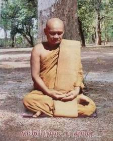

|

วันนี้เป็นวันพระ
ที่ได้มารวมกัน ต่างคนก็ต่างมา มีกิจวัตรกันเป็นบางอย่างที่มาวัดนี้
บางคนก็มีความสุขใจก็มาวัด บางคนก็มีความทุกข์ใจก็มาวัด เป็นประเพณีของชาวคนไทยเรา
ถึงแม้จะจนก็นึกถึงการทำบุญ ถึงแม้จะรวยก็นึกถึงการทำบุญ อะไรๆ
ทุกอย่างก็ล้วนแต่การทำบุญทั้งนั้น อันนี้เป็นส่วนมาก ในส่วนจิตคนไทยเราทั้งหลาย
ฉะนั้นวันนี้ยิ่งเป็นวันธรรมสวนะ เจ็ดวันครั้งหนึ่ง เจ็ดวันครั้งหนึ่ง
เป็นโอกาสของอุบาสกอุบาสิกา ผู้ชายผู้หญิงผู้เข้าใกล้พุทธศาสนานั้น
เป็นบัณฑิตที่สำคัญมาก ปกติแล้วก็คือพวกเราทั้งหลายนั้น เป็นผู้สังวรสำรวมรักษาศีลห้าประการ
เกือบตลอดทุกคนที่เคยมาวัด เป็นปรกติศีล ปรกติกาย ปรกติวาจา อันนี้คือศีลเป็นพื้นเพตั้งแต่ต้นเดิมมาทีเดียว
ทีนี้ศีลแปดนี้ เป็นศีลพิเศษอันหนึ่ง
ของพุทธบริษัททั้งหลายซึ่งเป็นฝ่ายอุบาสกอุบาสิกา เพราะว่าวันนี้เป็นวันอุโบสถศีลที่จะเพิ่มข้อปฏิบัติขึ้นอีก
ให้มันยิ่งขึ้นไปกว่าธรรมดา ธรรมดานั้นก็เรียกว่าเป็นปรกติเสมอมา
วันนี้เป็นอุโบสถศีล เป็นวันที่สำคัญ เป็นวันที่พวกเราทั้งหลายสมาทานข้อวัตรให้สูงขึ้น
คือวันนี้โดยเฉพาะอย่างยิ่งผู้รักษาอุโบสถศีลวันหนึ่งคืนหนึ่งเป็นต้น
ก็ไม่ให้ทานข้าวเย็น ให้ทานข้าวแต่เช้าไปถึงเที่ยงก็พอแล้ว ข้าวเย็นไม่ต้องทานกันเหมือนวันธรรมดา
แล้วก็เพิ่มข้อปฏิบัติขึ้นอีกหลายๆ อย่าง เช่น ไม่แต่งเนื้อแต่งตัวสดสวย
หรือไม่นั่งนอนที่นุ่มที่นวล อันเป็นเหตุให้ใจของพวกเราทั้งหลายเพลิดเพลินไปในทางกามคุณยั่วยวน
เป็นต้น หลายประการพร้อมเข้าเป็นศีลอุโบสถศีล
ฉะนั้น วันนี้ปราชญ์ท่านจึงกล่าวว่าเป็นวันอุโบสถศีล
อุโบสถศีลนี้เป็นศีลที่พิเศษ เป็นศีลที่มีข้อวัตร เป็นศีลที่มีธุดงควัตร
ละเอียดอ่อนขึ้นไป เป็นวันอุโบสถพร้อมด้วยการภาวนา เช่นเราไม่ทานข้าวเย็น
ไม่ทานอาหารเย็น มันก็หมดภาระไป การปลิโพธกังวลของพวกเราทั้งหลายนั้นมันก็น้อยลงๆ
ข้อวัตรปฏิบัติของพวกเรามันก็ดีขึ้น อันนี้เป็นศีล
แต่ว่าที่จะมีศีลยิ่งหย่อนนั้น
ก็เพราะการประพฤติปฏิบัติ ไม่ใช่ว่าเป็นชื่อของอุโบสถศีลแล้ว มันจะเป็นศีลอันยิ่ง
ไอ้สิ่งที่มันจะยิ่งนั้นก็คือการเราปฏิบัติให้มันยิ่งขึ้น ให้มันดีขึ้น
ให้มันประเสริฐขึ้น ไอ้ชื่อของศีลนั้นจะเป็นศีลห้าก็ตาม ศีลแปดก็ตาม
ศีลอะไรๆ ก็ตามทั้งนั้นน่ะ อันนั้นมันเป็นชื่อของมัน ส่วนมันจะยิ่งหรือหย่อนนั้น
มันอยู่ที่การพวกเราทั้งหลายปฏิบัติ ให้มันเคร่งครัดขึ้น ให้มันดีขึ้น
จะเป็นศีลห้ามันก็ดี จะเป็นศีลแปดมันก็ดี จะเป็นอุโบสถศีลอะไรมันก็ดีทั้งนั้น
มันอยู่ที่การปฏิบัติ ไม่ใช่ว่าถึงวันอุโบสถ เราได้มาสมาทานอุโบสถแล้ว
อาการกายวาจาของเราก็ปฏิบัติหย่อนอยู่อย่างเก่านั้น ก็จะเห็นว่าเราเป็นบุญอันยิ่ง
เป็นบุญอันประเสริฐ แล้วก็เป็นศีลอันยิ่ง อันนั้นหาไม่ได้อย่างนั้น
ฉะนั้น สิ่งใดที่มันจะยิ่งก็คือทำให้มันดีขึ้น
ให้มันสูงขึ้น ให้มันยิ่งขึ้น มิใช่ว่าทำให้เสมอตัว หรือทำจนมันหย่อนลงไป
ให้มันดีขึ้นไปกว่าเก่า ลักษณะกาย ลักษณะวาจาของเรา ลักษณะจิตของเรานี้
ก็เป็นเช่นนั้นเหมือนกัน ฉะนั้นจงพากันมีใจเข้มแข็ง เพราะว่าเจ็ดวันมีทีหนึ่ง
การทำให้ศีลของเราเศร้าหมอง
การทำให้การเจริญภาวนาของเราไม่ราบรื่น ไม่สูงขึ้น ก็เพราะการปฏิบัติมีการคุยกัน
การคุยกันการพูดกันเรื่องไม่เป็นสาระประโยชน์อะไร เช่นว่าทำกอ
เราไปทำกันแล้วอยู่บ้านเราก็ทำกันแล้ว ขายกอตีกอผูกกอนั่น สารพัดอย่าง
ก็ควรเอาไว้บ้าน มาถึงวัดแล้วก็ควรทิ้งมัน อย่ามาลอกกอในวัด อย่ามาขายกอในวัด
อย่ามาผูกกอในวัด วันนี้ให้เลิกกิจการบ้านทั้งหลายนั้น เพราะเราได้มาทำงานเช่นนี้
การค้าขายทุกสิ่งทุกประการก็เหมือนกัน ไม่ควรเอามายุ่งในที่นี่
เพราะในที่นี่เราพยายามทำจิตใจให้เป็นอารมณ์อันเดียว
สมาธิคือทำอารมณ์ให้เป็นอันเดียว
คือทำจิตให้เป็นหนึ่ง ทำจิตให้เป็นอันเดียว ถ้าเรามาทำหลายอย่างมันยุ่งมันเหยิงไปหมด
ไม่รู้จักว่าคนใหม่ ไม่รู้จักว่าคนเก่า คนเก่าก็ทำอย่างนี้ คนใหม่เข้ามาก็ไม่ได้อานิสงส์
เพราะคนเก่าพาทำอย่างนี้ก็ทำไปอย่างนี้ เลยปิดหูปิดตากันไปเรื่อยๆ
ไม่รู้เรื่องกันว่าทำอะไรกัน
ฉะนั้น
การกระทำของเราทั้งหลายเป็นหมัน เคยได้ทำมาไหม ? เช่นสมัยก่อน
พ่อแม่ปู่ย่าตายายของเราน่ะ ตามที่อาตมาดูมานะทำมา เข้ามาวัด มาภาวนาไม่รู้จักการภาวนา
ไม่รู้จักไม่เห็น เช่นทุกวันนี้ก็เหมือนกัน ตามที่อาตมาสังเกตนี้
ไอ้คนที่เข้ามาวัดกับเพื่อนเฉยๆ ก็มาเฉยๆ ไอ้ตอนเช้าถวายจังหันพระนะ
ควรน่ะจะมากราบพระ มาไหว้พระ มาสวดมนต์กับเพื่อนทั้งหลายนั้น ที่เราไม่เคยกระทำ
ไม่เคยกราบ ไม่เคยนบ ไม่เคยไหว้ เราก็ควรพยายามนำลูกนำหลานเข้ามากราบเข้ามาไหว้น่ะมันก็ดีนะ
บางคนเคยบ้างไหมนี่
ไม่เคยเข้ามาในศาลาโรงธรรมเลย เพราะว่ามาวัดนั่งอยู่ข้างนอกน่ะ
นั่งคุยกันอันโน้นอันนี้กับลูกกับหลาน ไม่รู้เรื่อง อันนี้ไม่ใช่เป็นคนเข้าวัด
เข้าวัดเหมือนไก่ ไก่มีลูกอ่อนมันเข้าวัด มันก็ฝึกเอาลูกเอาหลานมันเข้าวัดนะ
มาเขี่ยกินขี้หมูขี้หมาตามนั้นแหละ มันไม่ได้มาหาอะไรหรอก อันนี้ก็เหมือนกันฉันนั้น
อันนี้คือเข้าวัดไม่ถูก เราไม่เคยกราบ ไม่เคยไหว้ ไม่เคยได้ยิน
ไม่เคยได้ฟัง ก็เข้ามา ลูกหลานได้กราบ ได้ไหว้ ได้ยิน ได้ฟัง เพื่อฝึกหัดดัดสันดานของตนและลูกหลานพี่น้องทุกคน
เมื่อเข้ามาทำวัตรสวดมนต์
ก็เข้ามาเรียบ สวดไม่ได้เราก็นั่งฟัง ให้จิตสงบเป็นสมาธิ ให้จิตเยือกเย็น
สบาย ฝึกให้สงบอย่างนี้ มันก็ยังเป็นบุญ มันก็ยังเป็นกุศล มันเป็นเครื่องที่นำตนเข้าสู่ธรรมะ
นำลูกนำหลานเข้าสู่ธรรมะได้ อันนี้เราเข้าอยู่ในวัด เข้ามาวัดไม่เห็นวัด
เข้ามาวัดไม่เห็นพระ ปลามันอยู่ในน้ำมันไม่เห็นน้ำ ไส้เดือนมันอยู่ในดินมันก็กินขี้ดิน
แต่ว่ามันไม่เห็นดิน เราทั้งหลายก็เหมือนกันฉันนั้น
เข้ามาวัดไม่รู้จักวัด เข้ามาวัดไม่ถึงวัด
ฉะนั้นปัญหาอันนี้มันจึงเกิดขึ้นแก่พวกเราทั้งหลายและลูกหลานตั้งแต่นั้น
ไม่รู้เรื่องอะไร ไม่รู้เรื่อง อันนี้เห็นว่าเข้ามาวัดมันเป็นบุญ
เป็นส่วนหนึ่งของมนุษย์ทั้งหลายจะเข้ามาวัด เห็นพ่อแม่เข้ามาวัดก็เข้ากันมาตามๆ
กันมาเรื่อยๆ ๆ ผลที่สุดอายุสี่สิบปีห้าสิบปีนะ เมื่อพูดถึงธรรมะธัมโมพูดถึงข้อวัตรปฏิบัติ
พูดถึงพระพุทธพระธรรมพระสงฆ์ไม่รู้เรื่อง ไม่รู้อะไรเลย อันนี้เรียกว่าปลามันอยู่ในน้ำ
มันก็แช่อยู่ในน้ำ ตามันก็เกลือกกลั้วอยู่กับน้ำแต่ว่ามันไม่เห็นน้ำ
ไส้เดือนมันอยู่ในดิน มันก็กินขี้ดินเป็นอาหารของมัน แต่ว่ามันก็ไม่เห็นขี้ดิน
มันเห็นขี้ดินเป็นอย่างอื่น มันเห็นน้ำเป็นอย่างอื่น เช่นนั้น
บุคคลที่เข้ามาวัด ไม่เห็นวัด ก็เหมือนกันกับปลาที่ไม่เห็นน้ำ
เหมือนไส้เดือนที่ไม่เห็นขี้ดิน ไม่รู้จักขี้ดิน มิฉะนั้น เราอย่าว่าเลยถึงการฟังธรรม
แต่ขนาดนั้นเราก็ยังไม่รู้เรื่องอะไร
ที่นี้ข้ออรรถข้อธรรมนั้นเรียกว่าธรรมะ
ธรรมะไม่รู้เรื่องว่าอะไรคือธรรมะ เมื่อโตขึ้นมาใหญ่ขึ้นมาก็นำลูกหลานเข้าไปสู่ที่พึ่งพิงอาศัย
ไม่รู้จักธรรมะ ไม่รู้จักพระพุทธ ไม่รู้จักพระธรรม ไม่รู้จักพระสงฆ์
ก็พาลูกพาหลานเข้าไปกราบจอมปลวก จอมปลวกอยู่ตามป่า เอ้อเห็นว่าที่นี่มันไม่เหมือนเพื่อนเขานี่
ดินมันยาวขึ้นมามันพ้นขึ้นมา เห็นจะเป็นของศักดิ์สิทธิ์ล่ะมั้งนี่กราบเสีย
พอกราบแล้วก็บ่นอะไรต่ออะไรอยากจะได้โชคลาภอะไรก็ว่ากับไอ้ขี้ปลวกนั่นแหละ
ไอ้ความเป็นจริงมันบ้านของปลวกขี้ปลวก นับถือเช่นนั้นขึ้นมา
บางแห่งก็โดยมากพวกจีนเขา
ไอ้ปลวกมันขึ้นอยู่ใต้ถุนบ้าน มันเป็นจอมปลวกขึ้นมาสูงๆ ดีใจ รีบหาจีวรพระไปคลุมให้นะ
ปลวกมันก็ยิ่งกินเข้าไป หาดอกไม้ไปบูชาเข้า ปลวกมันก็ยิ่งทำบ้านมันขึ้น
หาจีวรพระไปคลุมให้ ปลวกมันก็ยิ่งดีมันขึ้น ใหญ่ขึ้นทุกวันๆ ผลที่สุดตัวเจ้าของเองจะไม่มีที่อยู่บ้าน
มีแต่ของศักดิ์สิทธิ์อยู่ในบ้านหมดทีเดียว เจ้าของไม่รู้ว่าจะไปอยู่ที่ไหนกัน
ก็ไปกราบไปไหว้อยู่อย่างนั้นแล้ว อันนี้แหละเรียกว่าหลง หลงที่สุดแล้วนี่
หลงจนที่สุดซะแล้วน่ะ
อันนี้แหละหาเหตุผลได้ยาก
ไม่มีเหตุผล เพราะเราไม่รู้เรื่องว่าอะไรมันเป็นอะไร ? อะไรเป็นอะไรมันเกิดมาจากอะไร
? ก็เหมือนกับคนที่เราไม่รู้จักทุกข์ ไม่รู้จักทุกข์แล้ วก็ไม่รู้จักเหตุของทุกข์
ไม่รู้จักเหตุของทุกข์ แล้วก็ไม่รู้จักความดับทุกข์ ไม่รู้จักความดับทุกข์
ข้อปฏิบัติที่จะให้ถึงความดับทุกข์ท่านก็ไม่รู้จัก ก็เลยเป็นคนหลง
ไอ้พวกนี่เป็นพวกคนหลงอยู่ ไม่ใช่ว่าคนอยู่ข้างนอกน่ะ ไม่ใช่ว่าคนเข้าวัดคนไม่หลงน่ะ
คนเข้าวัดยิ่งหลงมากก็มี ยิ่งมากยิ่งไม่รู้เรื่องอะไรต่ออะไร
อาตมาเคยไปพบอุบาสกตามป่าเขา
เขาเข้าวัดทุกวันๆ ตามวันพระ สวดพุทธคุณ ธรรมคุณ สังฆคุณ ก็พอสมควรแล้ว
เขาลุกหนีต่อหน้าเลย เขาว่าผมไม่เข้าใจอย่างนั้น สวดมากมันก็ได้มาก
สวดน้อยมันก็ได้น้อย นี้เขาพูดถึงการสวด ไม่พูดถึงการปฏิบัติ
เมื่อพูดถึงการสวดเช่นนี้ ฉะนั้นนักศึกษาที่ลูกศิษย์พระฝรั่งที่มาจากเมืองนอกครั้งแรก
มาเห็นอาตมาสวดมนต์ เขาก็มาวิพากษ์วิจารณ์กันไปหลายๆ อย่าง เขาเข้าใจว่าไม่เกิดประโยชน์อะไร
สวดมนต์เช่นนี้ก็เหมือนร้องเพลงเท่านั้นแหละ ไม่เห็นจะมีอะไร จริง
อาตมาว่าจริงของเขาเหมือนกัน ถ้าสวดไม่มีความหมายก็เหมือนร้องเพลงเล่นไปเช่นนั้นแหละ
แต่เมื่อมาย้ำถึงข้อประพฤติมาย้ำถึงข้อปฏิบัติเข้าไปแน่นอนเสียแล้วจริงๆ
แล้วเนี่ย เขาก็ดีใจเขาก็เห็นด้วย สวดที่มีความหมาย สวดเพราะการประพฤติ
สวดเพราะการปฏิบัติ สวดเพราะการชี้แจงทางผิดทางถูกให้ผู้สวดนั้นเข้าใจ
ยิ่งเป็นเครื่องประกอบต่อการปฏิบัติ สวดในการประพฤติในการปฏิบัติ
อันนี้เป็นต้น
ฉะนั้น
การภาวนานั้นไม่ใช่การอย่างอื่น เรื่องภาวนาแท้ๆ น่ะ เราทั้งหลายก็นึกว่านั่งหลับตาภาวนา
อย่างนี้ ถ้าไม่ได้นั่งก็ไม่ได้ภาวนา บางคนไปบ่นถึงอาตมาว่า อีฉันนั่งไม่ได้
ภาวนาไม่ได้นั่งไม่ได้ อย่างนี้เป็นต้น นี่เพราะความเห็นของเขาว่า
การภาวนาก็คือการมานั่ง นั่งให้นานที่สุด นั่งให้ดีที่สุด มีการนั่งเป็นพื้นเรียกว่าการภาวนา
เป็นต้น ไอ้ความเป็นจริงอันนี้มันก็เข้าใจผิดไปเสียครึ่งหนึ่ง
เข้าใจถูกไปเสียสักครึ่งหนึ่ง
การภาวนานี้มีความหมายว่า
ภาวนาคือการกระทำให้เกิดขึ้น ทำให้มีขึ้น
ทานไม่มี ภาวนาพิจารณาถึงการให้ ให้มันมีการให้ ให้มันมีความเชื่อในการให้
การให้มันมีบุญอย่างไร ? ท่านจึงจัดเป็นทานบารมี การให้นี่มีบุญ
บุญคืออะไร ? บุญก็คือความดีนั่นเองแหละ บุญนั้นเช่นว่าเราเดินไปตามทางหิวๆ
ซิ มีใครเอาข้าวห่อให้สักห่อหนึ่งสิ จิตใจเราจะเป็นอย่างไร ? ใจเรามันก็ดีขึ้น
ใจเรามันก็สบายขึ้น นั่นแหละบุญแล้วนั่นแหละ นั่นบุญคือความดีนั่นแหละ
บุญคือความถูกต้องนั่นแหละ นี้ให้เข้าใจว่าเป็นทานบารมี การให้นี้ท่านเรียกว่าเป็นบุญอันหนึ่ง
ให้นึกถึงเมื่อเป็นอนุสติถึงทานบารมี คือคุณธรรมอันยวดยิ่ง
พระพุทธเจ้าทุกองค์
ทุกท่าน ทุกศาสนา จะต้องมีการให้เป็นเบื้องแรก เป็นคนใจบุญอ่อนน้อม
บุญมันเกิดขึ้นกับคนทั้งสองคน คนรับก็สบาย ได้อาหารการอยู่การกิน
ได้ผ้านุ่งห่มไปรักษาไปใช้มันก็ดีอยู่ที่นั่งที่นอนไป ไอ้คนที่ให้นี่ก็สบายใจ
ไม่เหมือนกับขโมยเอาของคนอื่นมา จะให้ข้าวไปสักห่อหนึ่ง จะให้กางเกงไปสักตัวหนึ่ง
จะให้อะไรไปสักชิ้นหนึ่งเป็นต้นก็ดีใจ ดีใจเพราะของของเรานี้เราได้ให้เขาไปด้วยดี
ไม่ได้ซื้อไม่ได้ขาย ให้ไปแล้วเราก็สบายใจ นึกไปแล้วเขาที่รับเขาก็จะเป็นคนสบาย
เราคนที่ให้ของเราไปเราก็สบาย ความสบายทั้งสองอย่างนี้แต่ก่อนยังไม่มี
ถ้าเรามาทำขึ้นเรียกว่าการภาวนามันก็เกิดขึ้น ความสบายมันก็เกิดขึ้น
ความสบายนั้นมันก็มีขึ้น ทั้งสองคนนี้นั่นท่านเรียกว่าการกระทำบุญ
นี้เรียกว่าภาวนานี้ก็มันถูกอย่างนี้
บุญมันเกิดขึ้นมันเกิดขึ้นมาเพราะเหตุผลอย่างนี้ท่านจึงเรียกว่าเป็นบุญ
นี้เรียกว่าการพิจารณา การภาวนา การพิจาณาอย่างนี้ ให้มันมีความถูกต้องอย่างนี้ท่านจึงเรียกว่าบุญ
ไม่ใช่ว่าบุญที่เราทำสนุกสนานกันแล้วมันเป็นบุญ อย่างบุญกันทุกวันนี้
บุญฆ่ากัน บุญแกงกัน บุญแทงกัน บุญยิงกัน บุญทุบตีกัน บุญอะไรต่ออะไรกันวุ่นวาย
ที่ไหนมันจะถูกต้อง ? ที่ไหนมันจะเป็นบุญ ? อะไรไม่ดี มันจะดีเกิดขึ้นได้อย่างไร
? อะไรไม่ถูก มันจะเกิดความถูกต้องขึ้นอย่างไร ? อันนี้เรียกว่ามันไม่เป็นบุญ
แต่การกระทำของคนทุกวันนี้การทำเช่นนี้เรียกว่าการกระทำบุญ แต่ว่ามันไม่เป็นบุญ
มันไม่มีความหมายในการกระทำบุญ ทำบุญทุกวันนี้มันถึงเป็นอย่างนั้น
ฉะนั้น
ท่านจึงบอกว่าให้ภาวนา จะทำทาน จะทำกุศล จะทำอะไรต่างๆ ก็ดี ให้เราทั้งหลายภาวนา
ก็คือให้เราทั้งหลายพิจารณานั่นเอง เรียกว่าการภาวนา การภาวนานั้นฉะนั้นจึงมิใช่ว่าการนั่งอย่างเดียว
การยืนมันก็เป็นการภาวนาได้ การเดินก็เป็นภาวนาได้ การนั่งก็ภาวนาก็ได้
การนอนก็ภาวนาก็ได้ ทุกอิริยาบถการยืนก็ดี การเดินก็ดี การนั่งก็ดี
การนอนก็ดี เราจะพยายามทำความคิดเราให้ถูกต้องได้ทุกอิริยาบถนี้
ฉะนั้น
การภาวนานั้นมิใช่ว่าการนั่งหลับตาอย่างเดียว การลืมตาก็ภาวนา
การหลับตาก็ภาวนา การนั่งก็ภาวนา การยืนก็ภาวนา การนอนก็ภาวนา
ภาวนาคือสร้างความคิดของเราให้มันถูกต้อง ไม่เบียดเบียนตน ไม่เบียดเบียนคนอื่น
ทำต้องเกิดประโยชน์ การกระทำที่ถูกต้อง การพูดที่ถูกต้อง การคิดอะไรๆ
ที่มันถูกต้อง ความถูกต้องทั้งหมดนั่นแหละคือบุญแล้ว นั้นเรียกว่ามันเป็นบุญ
บุญนี้เกิดจากการภาวนา ทานก็ดี ศีลก็ดี จะต้องภาวนา สารพัดทุกอย่าง
มนุษย์เราทั้งหลายหากินในโลกทุกวันนี้
ถ้าขาดการพิจารณาแล้วเป็นต้น ไม่ได้ เสียหาย จะซื้อจะขายจะแลกจะเปลี่ยน
จะทำอะไรทุกประการก็ต้องภาวนา ก็ต้องพิจารณา เราได้มาเท่านี้ เราใช้ไปเท่านี้
เราทำอย่างนี้ ต่อไปเราทำอย่างนั้น เราจะมีโครงการเรียกว่าการภาวนาทั้งนั้น
ถ้าใครภาวนาถูกก็สบาย ภาวนาถูกมันก็สงบมันก็สบายเรียกว่าการภาวนา
ฉะนั้นการภาวนาทุกคน ถึงแม้จะอยู่ในบ้าน หรืออยู่นอกวัด หรืออยู่ในวัด
หรืออยู่ที่ไหนๆ ก็ตามเถอะ ถ้าเรามีความเห็นอันถูกต้อง มีความคิดอันถูกต้องในการพิจารณานะ
มันก็เป็นการภาวนา
ถ้าหากว่าเราสงสัยไม่รู้เรื่อง
เราก็เข้ามาวัด อย่างวันนี้มาฟังธรรม ฟังธรรมกับครูบาอาจารย์
อย่างน้อยวันนี้ก็คงรู้จักการภาวนา เพราะคงรู้จักตามเหตุหรือผลว่าการให้มันเป็นอย่างไร
? มันเป็นประโยชน์อย่างไร ? การภาวนาทำอย่างไร ? การปฏิบัติทำอย่างไร
? อย่างน้อยมันก็รู้จักกราบมันรู้จักไหว้ พระพุทธอยู่ที่ไหน ?
พระธรรมอยู่ที่ไหน ? พระสงฆ์อยู่ที่ไหน ? เมื่อเราภาวนาที่ให้มันถูกต้องแล้วก็คือเรานึกถึงพระพุทธ
นึกถึงพระธรรม นึกถึงพระสงฆ์
มิฉะนั้นเมื่อเรารู้จักแล้ว
เราก็ยึดเอาหลักของพระพุทธเจ้า ของพระธรรมเจ้า ของพระสังฆเจ้า
เป็นสรณะที่พึ่งที่ระลึกของเราทั้งหลาย ถ้ามิเช่นนั้น พวกเราทั้งหลายจะไม่เป็นมนุษย์สมบูรณ์
เป็นมนุษย์ที่พลาดๆ ผิดๆ เป็นมนุษย์ที่ป้ำๆ เป๋อๆ ไม่สม่ำเสมอโดยสมบูรณ์ที่เป็นมนุษย์
เช่นไม่รู้จักว่าพระพุทธเจ้าของเราให้นับถือพระพุทธหนึ่ง พระธรรมหนึ่ง
พระสงฆ์หนึ่ง เป็นสรณะที่พึ่งของมนุษย์ทั้งหลาย เมื่อเราที่ไม่ได้พิจารณา
ไม่รู้ บางทีก็ไปพบอย่างอาตมาว่ามาน่ะ ที่เป็นจอมปลวกก็ไปไหว้
ต้นไม้ใหญ่ ๆ ก็ไปไหว้ ที่ไหนห้วยเหวที่น้ำมันเซาะมันลึกที่น่ากลัวก็เข้าไปไหว้
อะไรที่ไหนๆ ไหว้ทั้งนั้นนึกว่ามันแปลกใจ ไอ้พวกเราทั้งหลายนี่มันกลัวเพราะความไม่รู้เรื่องของมัน
อันนี้อาตมาได้ยินเสียงท่านเจ้าคุณพุทธทาส
ท่านเทศน์ให้ฟังทางอากาศ ท่านว่าสมัยก่อนนั่นท่านเป็นเด็ก ท่านกลัวผีเหลือเกิน
ตอนเช้าก็นำควายออกไปเลี้ยง ตอนเย็นก็กลับมา ที่กลับมาน่ะมันผ่านป่าช้ามานะ
ไอ้ท่านอาจารย์เจ้าคุณพุทธทาสท่านก็กลัว แต่ก็ขึ้นอยู่บนหลังควายนั่นแหละ
ควายก็กินหญ้ามันก็เฉย เจ้าคุณพุทธทาสก็กลัวอยู่บนหลังควายแหละ
ท่านก็คิดไปคิดมา เอ๊อไอ้ควายนี่มันดีกว่าเราละมั้ง มันไม่กลัวผีนี่
มันกินหญ้าสบายๆ อยู่ เราอยู่บนหลังควายที่ไม่รู้เรื่อง นึกว่าเราเป็นมนุษย์ขึ้นบนหลังควายก็ได้
เรายิ่งกลัวผีกลัวโน้นกลัวนี้ มีความหวาดมีความสะดุ้งอยู่ตลอดเวลา
ท่านก็คิดไปคิดมา คิดไปคิดมา ไอ้ความกลัวนี้เพราะว่ามันเกิดจากความคิด
ว่าตรงนี้มันจะเป็นอย่างนั้น ตรงนั้นมันจะเป็นอย่างนี้
ถ้ามาพูดถึงเรื่องควายแล้วขอโทษ
ไอ้ควายนี้มันดีกว่าเราเว้ย ! มันกินหญ้าสบาย มันไม่มีอะไรจะเป็นอะไรมันกินหญ้าสบาย
แต่เราเป็นมนุษย์ขึ้นอยู่บนหลังควายกลัว ตัวสั่น เอ้อ ! อันนี้เราจะเป็นมนุษย์ได้อย่างไรนี่
? มันจะดีกว่าควายอย่างไรนี่ ? มันโง่กว่าควายนี่ คิดไปคิดมาแล้วก็ละอายตัวเอง
ละอายควาย ท่านคิดไปอย่างนี้คิดไปคิดมาเปรียบเทียบเข้าไปคิดมาคิดไป
เอ้อ เราขึ้นบนหลังควายก็ได้ หักไม้แส้มาเฆี่ยนควายก็ได้ อะไรก็ได้
แต่มันกลัวผี แต่ควายน่ะมันเฉยมันสบาย มันไม่มีผีนี่ อันนี้มนุษย์เราดีอย่างไรนี่ไม่รู้เรื่อง
ท่านก็เห็นว่าผีมันเกิดที่ไหน ? ผีมันเกิดอยู่ที่ความมืด เกิดอยู่ที่ความกลัว
เท่านั้นแหละ แต่บัดนั้นมาท่านก็มีความคิด เออ มันเป็นอย่างนี้เอง
นี้คือท่านพิจารณา พอเห็นเช่นนั้นท่านก็นึกได้ทีเดียว เอาเป็นรูปเปรียบเลย
เอามาภาวนาเลย อันนั้นคือคนที่มีปัญญา
คนที่มีปัญญามันก็เห็นง่าย
เช่นว่าคนเนี่ยมันทุกข์ มันทุกข์ท่านให้เข้าวัด บางคนก็เข้าใจว่า
ถ้าอีฉันสบายร่ำรวยแล้วถึงจะเข้าวัด เป็นสุขๆ แล้วก็จะเข้าวัด
หมดภาระหมดหนี้หมดสินแล้วก็จะเข้าวัด ไอ้คนตายเอาเข้าวัดเอาไปเผาเท่านั้นแหละ
พระพุทธเจ้าท่านหมดกิเลสท่านจึงมาเข้าวัดรึ ? ท่านหมดห่วงหรือท่านเป็นอย่างไร
?
อาตมาว่าโยมถ้าไม่มีห่วงแล้วจะมาวัดทำไม
? ถ้าไม่มีทุกข์นี่จะเข้ามาวัดทำไม ? หมดภาระแล้วจะเข้ามาวัดทำไม
? ไม่มีปัญหาจะเข้ามาวัดทำไมไม่ต้องเข้ามาหรอก ไอ้ตู้ที่ใบเขาโชว์อยู่ที่ตลาดวารินฯ
น่ะ ตลาดเมืองอุบลฯนั่น เขาทำเสร็จแล้วเขาทาชะแล็กเขาโชว์ไว้ขายนั่นน่ะ
เขาจะเอาขวานไปผ่าอีกไหม ? เอากบไปไสอีกไหม ? เอาเลื่อยไปตัดมันอีกไหม
? ก็ไม่มีจะเอาขวานไปผ่าเอามีดไปตัดเอาเลื่อยไปตัดเพราะตู้นั้นมันเสร็จแล้ว
ไม่มีที่ทำแล้วก็โชว์ไว้เฉยๆ เท่านั้นแหละ
อันนั้นก็เหมือนกันฉันนั้น
ถ้าโยมไม่มีหนี้มีสิน ถ้าโยมไม่มีความไม่มีอะไรที่จะพัวพัน ไม่มีความยุ่งยาก
มีความสุขสบายทุกประการแล้ว โยมจะมาเข้าวัดทำไม ? เข้ามาเพื่ออะไร
? โยมก็ไม่ต้องเข้ามาเท่านั้นแหละ มาทำไม ? ไม่มีเรื่องที่จะทำ
เหมือนบุคคลที่ทานอาหารอิ่มแล้ว จะกลับเข้ามาทานอีกทำไม ? งานนี้เขาทำเสร็จแล้ว
จะมาทำอีกทำไม ? ที่นี่มันสะอาดแล้ว จะมาทำให้มันสะอาดอีกยังไงได้
? โยมไม่คิดอย่างนั้นนี่ โยมก็คิดว่าฉันไม่มีภาระ ฉันไม่มีธุระ
ฉันไม่มีปัญหา ฉันจะเข้ามาบวชในวัด
เมื่อไรเรามีปัญหาเราต้องรีบแก้ปัญหาไปเรื่อยๆ
พรุ่งนี้มีปัญหาก็ต้องพยายามแก้ปัญหา มะรืนนี้มีปัญหาก็พยายามแก้ปัญหา
เรื่อยๆ ไป เพราะว่าอาตมาเคยสังเกต โดยมาก ถ้าคนรวย คนสบายแล้ว
ก็วางใจ เช่นเคยเข้าไปบิณฑบาตในที่หนึ่ง ไม่รู้จักบาตร แต่มาพบอาตมาก็พอดีทำบุญบ้าน
เลื่อมใสมากก็เข้ามา เขาเอาจานข้าวใส่ตักบาตร จับผลไม้ขึ้น ใส่ลงตรงนี้หรือ
?
อาตมาก็นั่งดู
โอ้โห ! มันสำคัญเหลือเกินนะ ขนาดนายพลนะนี่น่ะไม่เคยรู้จักตักบาตร
แล้วก็โยมเรานี่แหละ โยมเข้าวัดธรรมดานี่ จ้ะใส่ไปตรงนั้นล่ะ ไอ้ตรงนั้นใส่ตรงนั้น
ตรงนั้นใส่ตรงนั้นไปเรื่อยๆ เหมือนกับคนตาบอดเลย อาตมาก็มานั่งพิจารณาว่า
เออ อันนี้มันติดอะไรบ้างนะ อันนั้นมันมีอะไรนะ ดูไว้ ยศมันขวางอยู่
รวยมันขวางอยู่ ความสุขมันขวางอยู่ ไอ้ความเพลินมันขวางอยู่ อะไรมันขวางมันติดอยู่ทั้งนั้นแหละ
ไม่ใช่ว่าไอ้ความจนมันขวาง
ทุกคนจะรวยจะจนอะไรก็ช่างมันเถอะ
ถ้าคนมีปัญญาแล้วน่ะ ไม่เคยเห็นว่าวันนี้กับเมื่อวานนี้นะ มันเหมือนกันหรือเปล่า
? เราเกิดมานี่วันนี้กับเมื่อวานนี้มันคนเดียวกันหรือเปล่า ? หรือมันคนละคนไหม
? อีกวันนี้จะถึงพรุ่งนี้อีกแล้ว มันจะเป็นคนคนเดียวกันหรือเปล่า
? ไม่คิด มันไม่เปลี่ยนเช่นนี้ จะเป็นนายพลจะเป็นนายพันจะเป็นคนร่ำคนรวยจะเป็นอะไรก็ช่างเถอะ
มันก็ต้องเปลี่ยนๆ ๆ ๆ ๆไปอย่างนี้ มันไม่ได้เว้นหรอก ชีวิตสัตว์ทั้งหลาย
มนุษย์ทั้งหลายก็เหมือนกันอย่างนั้น มันจะแก่ มันจะเจ็บ มันจะตายเรื่อยไปเท่านั้นแหละ
พระพุทธเจ้าท่านจึงสอนว่าอย่าประมาทเลย
อย่าถึงประมาท อย่าประมาท มียศอย่าลืมยศ มีลาภอย่าหลงในลาภ มีสรรเสริญอย่าหลงในสรรเสริญ
มันจะมีอะไรก็ให้มันมีเถอะในโลกนี้แต่อย่าเมามัน นะ อย่าเมา ท่านไม่ให้เมา
มันจะรวยก็ให้มันรวยถ้ามันจะรวยได้ มันจะจน เอาไว้ไม่ได้มันจะจนก็ให้มันจนไปอย่าไปเมามัน
มีจนก็อย่าเมาจน มีรวยก็อย่าเมารวย วันมีทุกข์ก็อย่าเมาทุกข์ วันมีสุขก็อย่าเมาสุข
วันมีหนุ่มก็อย่าเมาหนุ่ม วันมีแก่ก็อย่าเมาแก่ อย่าไปเมามันเลย
เรื่องทั้งหลายเหล่านี้มันเปลี่ยนๆ ๆ ไปอยู่อย่างเนี้ย ไม่ว่าใครต่อใครมันเป็นอยู่อย่างนี้
ฉะนั้น
ธรรมะอันนี้ท่านตรัสให้ตรงไปตรงมา เมื่อเรามาพิจารณาสิ่งทั้งหลายเหล่าเนี้ย
ไอ้ความยึดมั่นและถือมั่นที่มันเป็นปัญหาอยู่นั่นแหละ มันจะปล่อยคลี่คลายออกคลี่คลายลงไป
เราจะได้เห็นว่าคนธรรมดานี่ ทุกคนธรรมดา ตั้งแต่พระพุทธเจ้าลงมา
ท่านไม่ให้ถือเนื้อไม่ให้ถือตัวมันเหมือนกันทุกคน อย่างส่วนรวมที่น้อยอยู่ในศาลานี่
ตั้งแต่ตัวอาตมาลงไปหาญาติโยมอย่างนี้มันอันเดียวกัน มันไม่ใช่คนละอย่าง
มันคือคนคนเดียวกัน มันเหมือนกัน เหมือนกันอย่างไร ? มันเกิดขึ้นมาก็เหมือนกัน
เกิดขึ้นมาแล้วมันก็แปรไป ไอ้ความแปรไปเปลี่ยนไปมันก็เหมือนกัน
ผลที่สุดมันก็ดับไปมันก็เหมือนกัน ที่ไหนมันเหลืออะไรไหม ? มีอะไรเหลือไหม?
ไอ้ความโง่มันเหลือไหม ? ไอ้ความฉลาดมันเหลือไหม ? มันเหลืออะไรบ้างในไหมโลกเนี้ย
?
ทำไมที่พระพุทธเจ้าท่านสอนว่า
อันนี้ก็ไม่ใช่ตัวเรานะ อันนั้นก็ไม่ใช่ของเรานะ บางทีโกรธด้วยน่ะ
ไอ้คนที่ไม่รู้เนื้อรู้ตัวเนี่ย มีความร่ำมีความรวยมีความอะไรต่ออะไร
โกรธเสียด้วยน่ะ อื๊อ เทศน์อย่างนี้ไม่น่าฟังหรอก แหนะ ! นอกนั้นไปก็เทศน์ว่า
พิจารณานะโยมนะ คนนี่เกิดมาตายนะไม่แน่นะตาย คนยิ่งลุกไปใหญ่เลย
ฉันนี่ฟังไม่ได้หรอก เอาคำอัปรีย์จัญไรมาพูดกันเสียแล้ว ไอ้มันเกิดมันตายยังสิว่ามันอะไรยิ่งกลัวมันยิ่งจะไม่อยากจะได้ฟังมันเลย
นี่เรามาพูดเสียนี่ ไปกันเสียอย่างนี้ คือคนมันไกลธรรม มันจะไม่แก่
มันแก่ไปเท่าไรมันก็ยิ่งไกลหนุ่มไปเท่านั้นแหละ ไม่ใช่ว่ามันหนุ่มหรอก
มันไกลจากความหนุ่มไป แต่มันใกล้ความตายเรื่อยไปอีกแหละ ไม่ใช่มันว่าไปที่ไหน
ไอ้ตัวเราก็เหมือนกันทุกๆ คนนั่นแหละ
ถ้าเรามาคิดถึงธรรมะของพระพุทธเจ้าของเราแล้วน่ะ
เราจะคลี่คลายความกังวลความยึดมั่นถือมั่นออกไปได้ อย่างคนในวัดนี้ในศาลานี้
ถ้าเห็นฉันน่ะดีกว่าเธอ เธอน่ะโง่กว่าฉัน ฉันฉลาดกว่าเธอ เธอไม่เหมือนฉัน
อะไรต่ออะไรเนี้ย มันก็ลุ่มๆ ดอนๆ จะพูดอะไรก็คอยเพ่งกัน จะพูดอะไรก็มองกัน
จะหยิบอะไรก็มองกัน มองไปกันทั้งนั้นแหละ เพราะอะไร ? เพราะมันอ้างฉลาดกัน
มันอ้างโง่กัน อ้างความร่ำความรวยกัน อ้างความจนกัน อ้างความสุขกัน
อ้างความทุกข์กัน เพราะความเห็นผิดของเรานี่เอง
ฉะนั้น
พระพุทธเจ้าท่านจึงให้ภาวนา คนเรามันเหมือนกัน เป็นญาติคือความเกิด
เป็นญาติคือความแก่ เป็นญาติคือความเจ็บ เป็นญาติคือความตาย สม่ำเสมอกันทั้งนั้น
เมื่อคนเรามีจิตใจลงสู่ธรรมะเช่นนี้แล้วมันจะไปที่ไหนล่ะ มันก็สม่ำเสมอเท่านั้นแหละ
ในเวลานั้นพระเจ้าเมตไตรยเกิดแล้ว ธรรมของพระเจ้าเมตไตรยมีแล้ว
ถ้าเราคิดถึงธรรมพระเจ้าเมตไตรย ท่านก็เกิดเดี๋ยวนี้แหละ ท่านก็โปรดเดี๋ยวนี้แหละ
มีแล้ว แต่มนุษย์ทั้งหลายไม่คิดอย่างนั้น ไปยึดมั่นถือมั่นในบางสิ่งบางอย่าง
ที่จะขนทุกข์ให้ตัวเจ้าของน่ะไม่รู้เรื่อง
ฉะนั้น
เหตุผลในวันนี้ มาทำอุโบสถในวันนี้ มาฟังธรรมในวันนี้ มันยิ่งเกิดประโยชน์มากทีเดียว
ไม่ต้องฟังมาก ไม่ต้องอะไรมาก เมื่อคนมีปัญญาฟังเท่านี้ก็พอแล้ว
อะไรก็ไม่ใช่เรา อะไรก็ไม่ใช่ของเรา เราจะเอาอะไรมันไปทำไม ? จะยึดมั่นถือมั่นมันไปถึงที่ไหน
? แก่อายุพอสมควรแล้วก็ผ่อนพักๆ ไปเถอะ อย่าตะกุยตะกายไปจนถึงวันตาย
ไม่รู้เรื่องอะไร
คนนี่อายุก้าวเข้าห้าสิบกว่าหกสิบแล้วมันหลงนะ
โยมทุกคนจำไว้เถอะมันจะหลง อาตมาพอก้าวเข้าหกสิบมันจะจวนหลงแล้วเดี๋ยวนี่
มันจวนจะหลงแล้วล่ะ บางทีเรียกเณร ก. โดดไปพูดกับเณร ข. นู่น บางที่จะเรียกพระ
ก. โดดไปใส่พระ ค. นู้น มันจะเป็นอะไรมันจะเป็นอาตมาแล้วล่ะ มันเกษียณแล้วน่ะ
ในราชการข้างนอก หกสิบเอ็ดปีเขาเกษียณแล้ว แต่ในด้านธรรมะก็เกษียณเหมือนกัน
แต่เกษียณเงียบๆ กระซิบเงียบๆ เกษียณแล้ว ดูนะ จริงๆ เอานี้ไว้ตรงโน้น
เอาโน้นมาที่นี้ จะไปก็ว่ามา จะมาก็ว่าไป เอาไปเอามาไม่ทันทำไม่พิจารณา
แก่มาก็เลยมีความฉลาดมาก ฉลาดในความโง่นั่นไง แล้วไปยุ่งอยู่กับบ้านกับช่อง
ถกเถียงกับลูกกับหลานวุ่นวายกันอยู่อย่างนั้นแหละ ไม่มีเรื่องอะไร
ถือมั่นถือรั้นถือถังอยู่อย่างนั้นแหละ ไอ้ความยุ่งมันก็ยิ่งเกิดขึ้นมา
มันเป็นเช่นนี้
อาตมาเคยเห็นหลายแห่ง
เพราะเราเป็นพ่อแม่เขามันเกิดก่อนเขาเลี้ยงเขามามีความฉลาดมาก
ความฉลาดมากเลี้ยงมันไว้มากๆ ไอ้ความฉลาดน่ะมันแก่แล้วมันโง่น่ะ
ไม่ใช่ว่ามันฉลาดแต่ว่ามันโง่นะไอ้ความฉลาดนี่เลี้ยงไปนานๆ มันโง่
เถียงเก่ง ไม่ยอมรับความผิด อะไรต่ออะไรวุ่นวายก็ถกเถียงกับลูกกับหลาน
ลูกหลานก็มีปัญญาดีหัวเขากำลังใส เขาขี้เกียจพูดเขาก็หนีไป ไอ้ยายกะตานี่ก็ยิ่งชนะใหญ่เสียแล้ว
เราเป็นพ่อเป็นแม่มันซะ เด็กๆ จะพูดอะไรไม่ได้ ไอ้ความเป็นจริง
ไอ้มันถูกความเขานี่ก็เถียงเขา เอาชนะเขานี้ อันนี้ไม่ใช่ธรรมะน่ะดูไว้นะเราหลงแล้วน่ะ
ให้รู้จักว่าสังขารนี้เกษียณแล้วนะ
ตาเรามันเหมือนไหมล่ะ ? หูเราเหมือนเก่าไหม ? ร่างกายเหมือนเก่าไหม
? กำลังมันเหมือนไหม ? ไอ้ความจำมันเหมือนไหม ? อะไรมันเหมือนไหม
? ทำไมไม่ดูแล้วจะให้ใครมาเกษียณเราแล้ว พระพุทธเจ้าท่านจึงสอนว่าอย่าประมาทน่ะ
ปมาโทมัจจุโนปทัง คนประมาทแล้วเหมือนคนตายน่ะ อย่าประมาท มิฉะนั้นอาตมาเห็นว่า
พักผ่อนให้มันลงไปบ้างก็ดี ไอ้ความฉลาดนี้ก็มันใช้ได้แต่ระบบประสาทมันยังดีน่ะ
ถ้าระบบประสาทมันเสียหายก็ไม่ได้หรอกยิ่งไปกันใหญ่น่ะนี่ มันเป็นเช่นนั้น
บางแห่งจนเขาเรียกว่า
มันไปไม่ไหวนี่ พ่อก็มีอำนาจ แม่มีอำนาจ มีอำนาจเถียงไม่ได้ ลูกชายลูกสาวลูกสะใภ้ลูกเขย
เขามีปัญญา นะ เขาค่อยๆ ปะเหลาะ แม่ ไปอยู่วัดเสียเถอะ น่ะ พ่อไปจำวัดเสียเถอะ
เขาล่อไปอยู่วัดเขาขี้เกียจฟังบ่นทุกวันๆ นะ จะไปปลูกกุฏิให้อยู่ในวัด
เขาอุตส่าห์ส่งเสียให้สบายดีกว่า ดีกว่าจะมาบ่นจู้จี้จุกจิกอยู่นั่นแหละ
ให้พระท่านสอนดี อย่างนั้นสองตายายก็ยังไม่รู้เรื่อง นะ ไม่รู้เรื่องว่าว่าเขาเอาเราไปทำไม
เข้าใจว่าเขาเอาไปวัดไปวา ไปทำบุญทำทาน ก็ไปยุ่งกับเขา เขาก็เอาไปเท่านั้นแหละ
เอาเข้าไปหาหลวงตาที่วัดนั่นแหละ อย่างนี้ก็มีน่ะ ให้ระวังดีๆ
แก่แล้วมันไม่รู้เรื่องมันกลับเป็นเด็กอีกน่ะ
ใครรู้ไหมแก่แล้ว แก่แล้วมันกลับเป็นเด็กเหมือนต้นมะม่วงนั่นแหละ
เมื่อมันแก่มาแล้วมันก็สุก สุกแล้วมันก็หล่นลงมาที่ดิน ที่ดินเม็ดมันก็งอกเป็นต้นเล็กๆ
เป็นต้นมะม่วงเล็กๆ ต้นใหม่ๆ เห็นไหมล่ะ ? มันเป็นต้นใหม่อีกแล้ว
ไอ้คนแก่ๆ เราก็เหมือนกันนั่นแหละ ถ้ามันแก่เต็มที่แปดสิบเก้าสิบปีแล้วก็คลานเล่นเท่านั้นแหละ
นะ เยี่ยวก็ไม่รู้เรื่อง ขี้ก็ไม่รู้เรื่อง กินก็ไม่รู้เรื่อง
เป็นเด็กอีกแล้ว เอ้อ ถ้าคนแก่เป็นเด็กมันลำบากกว่าเด็กๆ มันเป็นเด็กนะ
เยี่ยวมันก็เหม็นกว่าเก่าน่ะ ขี้มันก็เหม็นกว่าเก่านะ อะไรมันเหม็นกว่าเก่าทั้งนั้นแหละ
เด็กแก่นี่ คนแก่มันเป็นเด็ก ไม่ใช่เด็กๆ มันเป็นเด็กมันค่อยยังชั่วหน่อยนะ
ใครก็อยากลูบใครก็อยากกอดใครก็อยากล้างมันน่ะ เขามีแต่อย่างนี้
ฉะนั้น
เมื่อหากว่าเราภาวนาแล้วน่ะมันจะแก้ปัญหาเหล่านี้ได้ มันแก้ปัญหาทั้งหลายเหล่านี้ได้
เป็นคนเลี้ยงง่าย เป็นคนว่าง่าย เป็นคนไม่ลืมตัว เป็นคนมีสติ เป็นคนมีสัมปชัญญะ
ไม่สร้างกรรม ไม่สร้างเวร กับตนกับผู้อื่น กับลูกกับหลาน นี้จะมีความสุขกายสบายใจอย่างนี้
นี่เรียกว่าเราภาวนา
ไม่ใช่ว่าภาวนาแต่ว่าเรานั่งหลับตาภาวนา
บางคนก็มาวัดทุกวันน่ะวันพระมานั่งหลับตาภาวนา ใช่ไหม ? กลับไปบ้านแล้วทิ้งหมด
ทะเลาะกับลูก ทะเลาะกับผัว ทะเลาะกับใครต่อใครวุ่น เขาเข้าใจว่าเวลานั้นเขาออกจากการภาวนาแล้ว
แล้วภาวนาก็มานั่งหลับตาเอาบุญ น่ะ พอออกไปแล้วบุญไม่ไปด้วย เอาแต่บาปไปเท่านั้นแหละ
ไม่อดไม่กลั้น ไม่ประพฤติธรรมไม่ปฏิบัติธรรม อะไรต่ออะไรหลายๆ
อย่าง
ไอ้ความเป็นจริงการประพฤติการปฏิบัติการภาวนานี้น่ะ
เมื่อไรก็ตามมันเถอะ จะอยู่นอกวัดก็ตาม อยู่ในวัดก็ตาม เหมือนกับว่าเราไปเรียนหนังสือในโรงเรียนที่ดีๆ
เมื่อเราเรียนหนังสือในโรงเรียนที่ดีๆ แล้ว เราเรียนหนังสืออ่านหนังสือได้ในโรงเรียน
น่ะ เราจะไปอ่านอยู่ที่บ้านเราก็ได้ จะอ่านอยู่ที่ไหนก็ได้ จะอ่านในทุ่งก็ได้
จะอ่านอยู่ในป่าก็ได้ จะอ่านอยู่ในชุมชนก็ได้ อ่านอยู่คนเดียวก็ได้
จะมาอ่านอยู่โรงเรียนก็ได้ อ่านที่ไหนก็ได้ เนี่ย ถ้าเราเข้าใจดีแล้ว
ไม่ใช่อ่านหนังสือจะวิ่งมาโรงเรียนถึงมาอ่านหนังสือได้ รับจดหมายแล้วจะวิ่งมาอ่านอยู่โรงเรียนถึงจะอ่านได้ไม่ใช่อย่างนั้น
การภาวนานี้ก็เหมือนกันเช่นนั้น
เมื่อเรามีปัญญาแล้วจะไปในทุ่งก็ดี
ไปในป่าก็ดี อยู่ในคนจำนวนมากก็ดี อยู่ในคนจำนวนน้อยก็ดี จะถูกนินทาก็ดี
จะถูกสรรเสริญก็ดีเป็นต้น ก็มีความรอบรู้สม่ำเสมออยู่นั่นแหละ
เรียกว่าคนที่ภาวนา ไม่ใช่อย่างนั้น ให้มันรู้เท่าอารมณ์ทั้งหลายทั้งปวงเหล่านั้น
เช่นนี้ก็เรียกว่าเรานั่นสบายแล้ว ต้านทานอารมณ์ได้ปล่อยตาปล่อยหูปล่อยจมูกปล่อยลิ้นปล่อยกายปล่อยใจออกมาได้แล้ว
นี้เรียกว่าคนภาวนาเป็น มีอารมณ์เป็นอันเดียว
อารมณ์อันเดียวคืออะไร
? ไม่เอาเรื่องกับใคร เรียกว่าอารมณ์อันเดียว มันเปลี่ยนจากอารมณ์อันเดียวของสมถกรรมฐาน
สมถกรรมฐานเอาเรามาเรียนภาวนาพุทโธๆ ๆ ๆ อันเดียว มันน้อยไป ถ้ามันพลาดจากพุทโธแล้วมันไปที่ไหนก็ได้
อารมณ์อันเดียวคืออารมณ์วิปัสสนานั่นแหละ ไม่มีชั่วไม่มีดี มีดีมีชั่วแต่จิตของเราอยู่เหนือชั่วเหนือดีทั้งนั้น
ฉะนั้นเป็นอารมณ์อันเดียวอย่างนี้ ปล่อยมันทิ้งไปเรื่องอนิจจังทุกขังอนัตตาหมดทั้งสิ้นอย่างนี้
นี้การปล่อยวางทั้งหมดนั้นเรียกว่าการภาวนาที่ถูกต้อง
จะยืนก็เป็นคนภาวนา
จะเดินก็เป็นคนภาวนา จะนั่งก็เป็นคนภาวนา จะนอนก็เป็นภาวนาน่ะ
เราจะรู้ไหมว่าเราจะตายเวลาไหน ? มันจะตายเมื่อเรานั่งหลับตาหรือเปล่าก็ไม่รู้
ไอ้กิเลสมันจะเข้ามาแต่เรานั่งหลับตาหรือ ? ใครเคยโกรธไหมเมื่อเดินอยู่เคยโกรธไหม
? นอนๆ อยู่เคยโกรธไหม ? เมื่อเดินไปเคยโกรธไหม ? หรือมันโกรธอยู่เมื่อเรานั่งหลับตามันเข้ามาน่ะ
อย่างนั้นถ้ามันเป็นเช่นนี้เราจะไปอาศัยแต่เมื่อเรานั่งหลับตาแล้วจะภาวนาได้อย่างไร
?
ภาวนาก็คือว่ารู้ทั่วถึง
รู้รอบคอบนั่นเองแหละเป็นต้น ท่านจึงเรียกว่าเป็นผู้มีสติความระลึกได้
เป็นผู้มีสัมปชัญญะความรู้ตัว เป็นผู้มีปัญญาความรอบคอบในการยืนการเดินการนั่งการนอน
สามารถจะมองเห็นความบกพร่องสมบูรณ์บริบูรณ์ด้านจิตใจตนอยู่ทุกเวลา
นั่นเรียกว่าคนภาวนา เมื่อเรารู้อยู่เสมอเช่นนั้นก็ไม่มีอะไรจะมากระทบกระทั่งเรา
มีอะไรคุ้มกันเรื่องจิตใจอยู่สบาย มีใจราบรื่นสม่ำเสมออยู่อย่างนั้นแหละ
นั้นเรียกว่าจิตเป็นปรกติ อันนี้เป็นคำสอนในวันนี้ ให้ญาติโยมทั้งหลายนำไปพินิจ
นำไปพิจารณา ไปภาวนาให้มันถูกต้องตามความหมาย ขององค์สมเด็จพระสัมมาสัมพุทธเจ้าของเราให้ดี
ใจกับกายของเรานี้เป็นสิ่งที่สำคัญมากที่สุด
คนเราก็บ่นว่ากายมันยุ่งใจมันยุ่ง ใจไม่สบาย ความเป็นจริงไม่ใช่อย่างนั้นโยมเข้าใจผิด
ใจไม่เป็นอะไร กิเลสมันเป็น ใจฉันไม่สบาย ไม่ถูก สิ่งที่สบายที่สุดคือใจ
ไอ้ที่ๆ ไม่สบายไม่ใช่ใจ สี่งที่สกปรกไม่ใช่ใจ สิ่งที่มันยุ่งยากไม่ใช่ใจ
มันกิเลสตัณหา ให้เราเข้าใจอย่างนี้ แบ่งมันออกเสีย โยมไปโทษแต่ใจกันทุกคนๆ
ใจมันจะมีอะไร ? ใจมันสบายอยู่แล้ว
เหมือนกันกับใบไม้ในป่านั่นแหนะ
ธรรมดาใบไม้ปรกติมันอยู่นิ่งๆ ไม่มีอะไร ที่มันกวัดแกว่งไปมาเพราะอะไร
? เพราะลมมันโกรกนี่ เข้าใจไหม ? นี่ให้เข้าใจเสียอย่างนี้ เราจะไปให้โทษแต่ใจก็ไม่ใช่
ที่ใบไม้มันจะกวัดแกว่งไปมานั่นเพราะอะไร เพราะลมมันโกรกมัน ถ้าลมไม่โกรกมันใบไม้ก็นิ่งเป็นปกติ
ใจเราก็เหมือนกัน เป็นของสงบอยู่แล้ว เป็นของสะอาดอยู่แล้ว ใจเดิมของเรามันเป็นอย่างนั้น
ที่มันกวัดแกว่งไปมานี่ คือมันใจใหม่ ใจปลอม มันถูกตัณหาชักจูงไปมาตลอดเวลา
เดี๋ยวก็มีสุขบ้าง เดี๋ยวก็มีทุกข์บ้าง เดี๋ยวก็อย่างโน้นเดี๋ยวก็อย่างนี้บ้าง
ทำให้เราวุ่นวาย อันนี้ไม่ใช่ใจจำไว้ ถ้ามันวุ่นขึ้นมาเมื่อไรก็ให้เข้าใจที่หลวงพ่อว่า
อันนี้ไม่ใช่ใจ ถ้าใจไม่มีอะไร เป็นของบริสุทธิ์เป็นของสะอาดเป็นปรกติ
อันนี้ใจปลอม ใจไม่ได้ฝึก อันนี้ให้เอาไปคิด เราจึงจะรู้จักสัดส่วนของการปฏิบัติ
เราอย่าไปคุมแต่อย่างอื่น ไปคุมที่ใจของเรา ใจนี้มันไม่มีอะไร
มันเป็นปรกติ
ถ้าเราปฏิบัตินั้นก็ค้นหาเรื่องปรกติคือใจเดิมของเรานั่นแหละ
ถ้าเห็นจิตเดิมใจเดิมเราแล้วเป็นต้นไม่มีอะไรวุ่นวาย เหมือนใบไม้ในป่า
ค้นไปถึงปรกติมันแล้วเรียกว่าไม่มีอะไรจะตบแต่ง เพราะลมไม่ได้โกรกมัน
นี้มันเป็นเพราะอารมณ์ ไม่สบาย ไม่ใช่ใจ มันทุกข์ ไม่ใช่ใจ กิเลสอย่างอื่น
มันเปลี่ยนหน้าเข้ามาซะ โยมก็วิ่งตามมันอยู่นั่น บางคนก็น่าสงสาร
จนคิดว่าไม่มีโอกาสที่จะปฏิบัติเพราะใจมันยุ่ง บางคนจะเข้าใจเสียอย่างนี้
ไม่ใช่ ใจเรามันไม่ยุ่ง ถ้าใจจริงๆ ไม่ยุ่ง ที่มันยุ่งก็เพราะกิเลสทั้งหลายเท่านั้น
ฉะนั้น
ขอสาธุชนทั้งหลายนี่ จงนำคำนี้ไปพิจารณา การประพฤติปฏิบัติ หนึ่ง
ตั้งต้นออกจากใจของเรา ไม่ตั้งต้นออกจากภายนอกมาหาภายใน ตั้งต้นเริ่มจากใจของเราออกไป
อันนี้ ที่เป็นปรกตินี้ ถ้ามันถึงที่มันถึงปกติมันจะไม่มีอะไร
เหมือนใบไม้ไม่มีลมมาโกรกมันจะเป็นปรกติอยู่อย่างนั้น ฉะนั้นวันนี้ให้การบ้านของญาติโยมทั้งหลาย
เอาไปเป็นการบ้าน จึงไม่ขออธิบายนาน อธิบายนานไม่ได้ศาลาหลังนี้มันง่วงนอนมันเย็น
มันจะง่วงนอน อันนี้ให้โอวาทของญาติโยมทั้งหลายที่มาในคราวนี้ทุกคน
และสถานที่นี้สถานที่ภาวนากัน ญาติโยมเดิมที่มันยุ่งยากลำบาก นานๆ
ก็มาเยี่ยมซะเรียกว่ามาธุดงค์ซะ ปีละครั้งก็ได้นี่มาพักอยู่นี่ก็ได้
เฉย ๆ แล้วก็กลับบ้าน ถ่ายทอดบรรยากาศดีมาก เปลี่ยนเสนาสนะ เปลี่ยนความรู้สึกนึกคิดมา
เป็นที่บำเพ็ญทางใจ เหมือนองค์สมเด็จพระสัมมาสัมพุทธเจ้าของเราท่านสอนไว้
ทุกคน
เริ่มต้นจากใจ การประพฤติปฏิบัติ ตามบัญญัติก็เรียกว่าให้ตั้งศีลห้าไว้ในใจ
ให้มีศีลห้า ถ้าศีลห้ายังไม่สมบูรณ์ ยังเป็นคนไม่ครบ นะ เป็นคนไม่เต็มคน
ใช่ไหม ? ถ้าเป็นรูปก็เหมือนคนบ้าๆ บอๆ ตามถนนน่ะ เห็นไหม ? ไม่เป็นปรกติคือคนไม่เต็มคน
คือคนไม่พอ แต่เราฟังแล้วก็ไม่เข้าใจ ถ้าเห็นเราเดินไปถ้ามีคนถามว่า
"เอ๊นั่นน่ะ มันเหมือนคนไม่พอนั่นน่ะ" เราก็โกรธนะ ไอ้ความเป็นจริงมันคนไม่พอ
ถ้าเรามันพอคนกันทุกคนมันจะสบายมากที่สุดล่ะ อันนี้ให้เริ่มจากศีลห้า
เป็นที่พึ่งของเราก็คือคุณพระพุทธพระธรรมพระสงฆ์เป็นที่พึ่งของเรา
ศาลาหลังนี้ไม่ใช่เป็นที่พึ่ง
เป็นที่อาศัยชั่วคราว ที่พึ่งของเราคือใจที่เห็นชอบนั้น เห็นอยู่นี่แต่ว่าเห็นมันชอบมันตรง
มิจฉาทิฏฐิจะเข้ามาปนปะปนไม่ได้ อันนั้นเรียกว่าที่พึ่ง มันจะเป็นอย่างไรก็ช่างมัน
มันก็ยังพึ่งในตัวของมันอยู่ แม้จะเป็นจะตายมันก็ยังมีที่พึ่งของมันอยู่
ศาลาหลังนี้มันเป็นที่อาศัย ไม่ใช่เป็นที่พึ่งของเราโดยตรง มันของข้างนอก
แหนะดูซินกมันมาอยู่ก็ได้เห็นไหม ? จิ้งจกมาอยู่ก็ได้ ตุ๊กแกมันมาอยู่ก็ได้
มันที่อาศัยทุกคน ใจเราถ้าบริสุทธิ์แล้ว อะไรมาอาศัยไม่ได้ ของปลอมมาอาศัยไม่ได้
มิจฉาทิฏฐิมาอาศัยไม่ได้ เป็นที่พึ่งของเราอย่างแน่นอน อันนั้นคือที่พึ่งของเรา
ฉะนั้น
ขอให้ญาติโยมทั้งหลายจงตั้งต้นออกจากใจ มีศีลห้าประจำ จึงจะเป็นคนพอคน
ถ้าขาดพลาดจากศีลห้าแล้วก็คนไม่พอคนเสียแล้วน่ะ อันนี้ให้ไปดูเอา
ในใจของเจ้าของ อะไรมันไม่ค่อยดีเขี่ยออก ค่อยๆ เขี่ยออก กลัวคนจะเห็นก็ไปเขี่ยคนเดียวก็ได้
นะ เขี่ยออกให้มันหมดให้มันหมดไป ให้มันถึงใบไม้ที่ลมไม่โกรก ให้มันถึงจิตที่บริสุทธิ์แล้วนั่นน่ะ
นั่นแหละตรงนั้นแหละพระพุทธเจ้าของเราว่าเป็นทางที่จะพ้นทุกข์
วันนี้ขอให้โอวาทเท่านี้ ฉะนั้นขอญาติโยมทุกๆ คนจงตั้งอยู่ในศีลธรรมทุกๆ
ท่าน
วันคืนล่วงไปๆ
บัดนี้เราทำอะไรอยู่ นี่ พระพุทธเจ้าว่าให้เรานะนี่ เจ็บนะนี่ไม่ใช่ไม่เจ็บนะนี่
วันคืนล่วงไปๆ บัดนี้เราทำอะไรอยู่ ท่านกระแทกอย่างนี้เราก็เฉยนะ
ไม่รู้สึกเจ้าของ วันคืนล่วงไปๆ มันไม่รอช้าทำอะไรกันอยู่เนี้ย
? จะไปยังไงมายังไงอยู่ยังไง ? นี่ท่านถามน่ะ แต่คนธรรมดาฟังก็เฉยไม่รู้เรื่อง
ถ้าคนมีนิสัยก็ตื่นคิดเลย เอ้อ บัดนี้เราทำอะไรอยู่? เรามีอะไรไหม
? เรามีทุกข์ไหม ? เรามีสุขไหม ? มันมีเพราะอะไรไหม ? อยู่ในตัวของเราน่ะ
มีอะไรจะเพิ่มมันไหม ? มีอะไรจะต่อเติมมันไหม ? อย่างนี้ ต้องคิดอย่างนี้
ฉะนั้นท่านจึงจัดการประพฤติปฏิบัติเข้าในใจของเจ้าของ เรื่อยไป
วันนี้ขอให้ญาติโยมทั้งหลายจงเป็นผู้มีความอยู่เย็นเป็นสุข สงบระงับด้วยธรรมะขององค์สมเด็จพระสัมมาสัมพุทธเจ้าตลอดกาลนานเทอญ
.....................................................................
ที่มา.-http://www.ajahn-chah.org

กลับไปหน้า
Web วัดท่าไทร
ไป Web สำนักงานเจ้าคณะภาค
๑๖
ไป
Web ศูนย์พัฒนาคุณธรรมภาคใต้
ไป
Web วิทยุชุมชนตำบลท่าทองใหม่
ไป Web ชมรมวีอาร์ร้อยเกาะสุราษฎร์ธานี
|